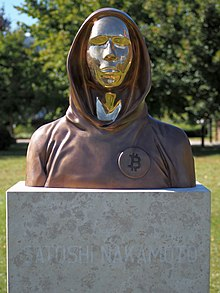

Satoshi Nakamoto
Il misterioso architetto della finanza decentralizzata

Un'illustrazione che rappresenta l'anonimato del creatore di Bitcoin.
L'eredità di Satoshi
Nel 2008, Satoshi Nakamoto ha pubblicato il whitepaper "Bitcoin: A Peer-to-Peer Electronic Cash System", proponendo una soluzione rivoluzionaria al problema della doppia spesa senza la necessità di un'autorità centrale. Questo documento ha gettato le basi per la prima criptovaluta al mondo, cambiando per sempre la nostra concezione di denaro.
Il 3 gennaio 2009, Nakamoto ha minato il "Genesis Block", il primo blocco della blockchain di Bitcoin, contenente un messaggio nascosto che faceva riferimento a un titolo del Times riguardante il salvataggio delle banche. Questo gesto ha segnato l'inizio di un nuovo paradigma economico basato sulla trasparenza e sulla crittografia.
Nonostante il successo globale di Bitcoin, l'identità di Satoshi rimane uno dei più grandi misteri dell'era digitale. Nel 2011, si è allontanato dal progetto dichiarando di essere "passato ad altre cose", lasciando il codice nelle mani della comunità. Oggi, il suo contributo continua a influenzare non solo la tecnologia, ma anche la filosofia e l'economia globale.